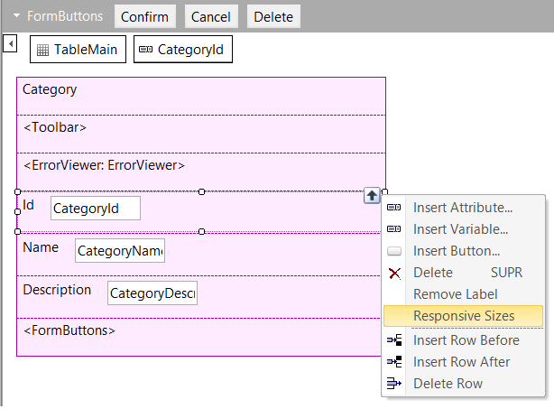
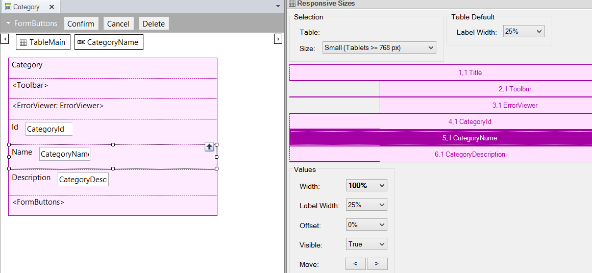
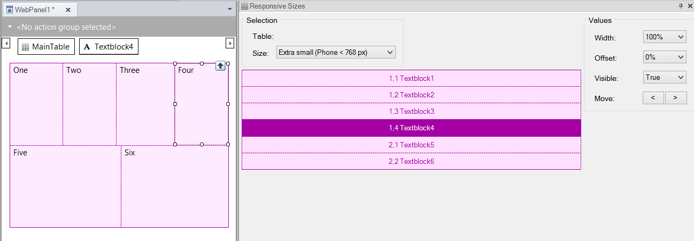
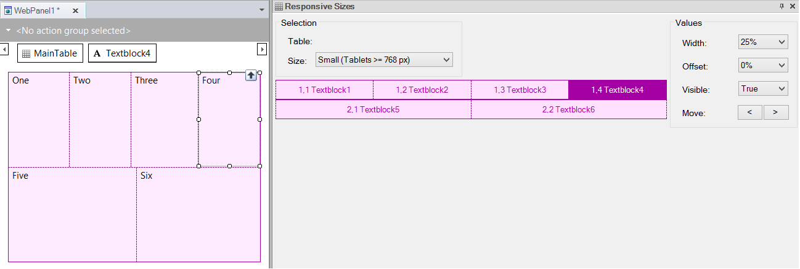
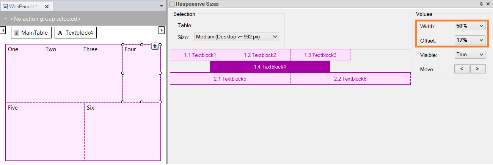
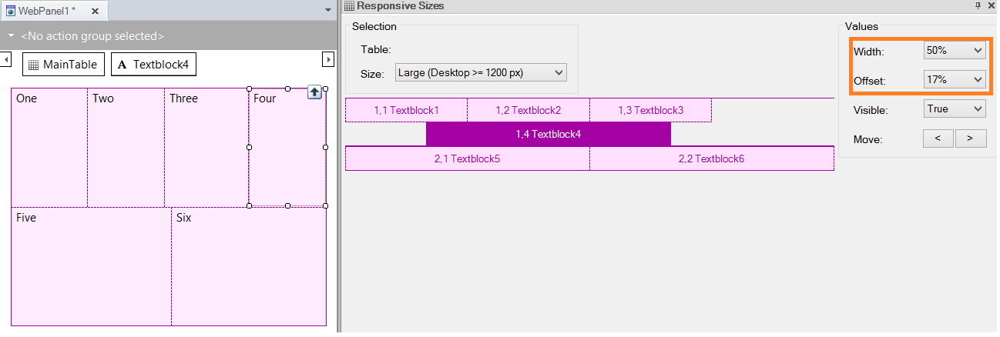

Responsive Sizes is a property of the Responsive Table control. It is available from the control’s list of properties and in its contextual menu.
This property is meant to allow the arrangement of elements in the form, for four different screen sizes, in order to make a RWD.
When we right-click on the Responsive Table, a contextual menu is displayed showing the Responsive Sizes property:

When the user clicks on the Responsive Sizes item in the menu, a dialog appears to select the screen size. The user selects the screen size from a combo box and configures the distribution of elements on the screen, for each size selected:

Screen sizes available correspond to different standard screen devices, as listed below (based on BootStrap Framework):
- Extra small devices (xs) (Phones < 768px)
- Small-size devices (sm) (Tablets >= 768px)
- Medium-size devices (md) (Desktops >= 992px)
- Large-size devices (lg) (Desktops >= 1200px)
Users may set different properties for each cell in the responsive table, and for each screen size.
It defines the cell width as a percentage.
The width is represented in a combo box with percentages. Values available for selection are the ones that match the column distribution of the Bootstrap Grid. So, the percentages may be converted into twelfths.
The aggregate width of cells in a row must be 100% or less.
Otherwise, cells not fitting in the row will be dropped to the bottom.
It defines a cell’s left margin as a percentage.
It moves the cell to the right according to the value specified.
As it happens with width values, the offset is represented in a combo box with percentages, and values available for selection are the ones that match the possible offset values of BootStrap Grid.
It determines whether the cell will be visible or not.
Change the order of the columns. The user can declare an offset for the column, so it displays in a different position depending on the screen size.
See Label Width property in Attribute class of a Theme object
Default values are based on the fact that, for small screens -like phone screens-, the best way to show information is in a single column (stacked). On the contrary, for wide screens, like tablet or desktop screens, the information is better displayed horizontally.
So, default values are:
Extra small devices
(Phone < 768px)
By default all the cells take up a 100% of the width and 0 offset for extra small devices.
Width=100%, Offset=0%, Visible= TRUE for all cells.

Small-size devices
(Tablets >= 768px)
Each cell takes up a width of 100% divided by the number of cells in the row. The width assigned to the cell is from a range of possible values and corresponds to the column distribution of the Bootstrap Grid. The average sum is 100%. Cells that do not fit in the row will be dropped to the bottom.
Offset=0%, Visible= TRUE for all cells.

Medium-size devices
(Desktops >= 992px)
Inherit from small-size device settings.
Large-size devices
(Desktops >= 1200px)
Inherit from medium-size device settings.
Information in bold letters means that its value is not the default.
In the picture below, the width and offset settings for medium-size devices have been changed for the 1,4 (Four) cell, and that’s why values are in bold letters.
As a consequence, the same settings are used for large-size devices, even though values are not in bold because they are inherited from the prior smaller screen size.


Users may opt for the default values by using the contextual menu and clicking "Use default".
Note that the medium-size screen will inherit from the small-size-screen when the medium-size has not lost the inheritance. The same happens in the case of large-size screens which inherit from the medium-size screens.
The settings for screen sizes apply to the specific screen size and larger sizes when no setting has been specified for larger sizes.
When no settings have been specified for smaller screen sizes, then 100% will be the default value. This is based on BootStrap behavior.
How to use the Abstract Editor: designing a Web Transaction Form
How to design a Responsive Web Application: Hiding a column in a grid
How to design a responsive web application: Hiding an element of the form
How to use the Abstract Editor: Hiding a cell in the Responsive Table
Arranging the layout in a RWA
|